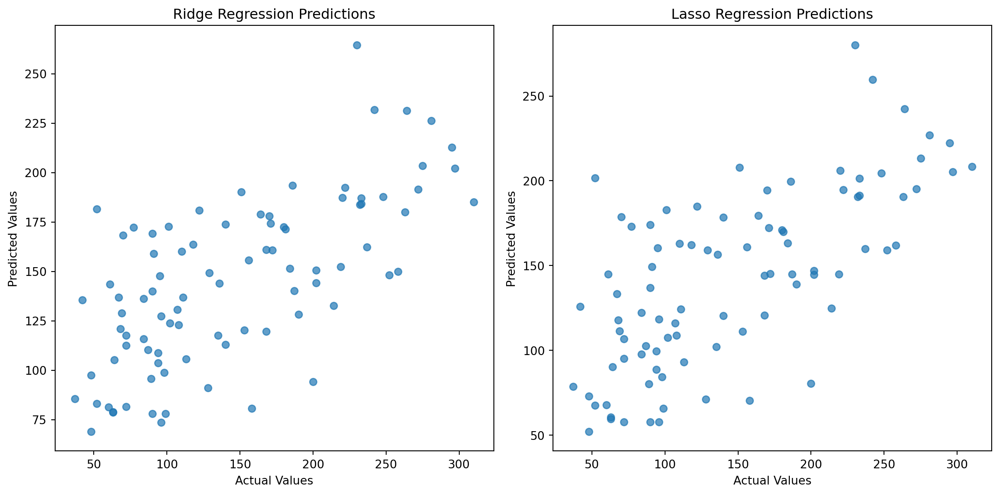
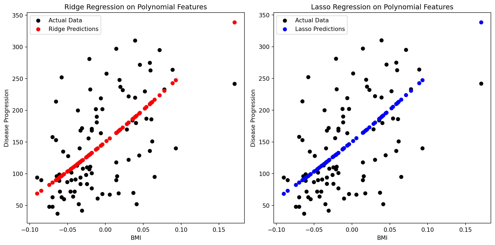

import numpy as np
import pandas as pd
from sklearn.datasets import load_diabetes
from sklearn.model_selection import train_test_split
from sklearn.linear_model import Ridge, Lasso
from sklearn.metrics import mean_squared_error, r2_score
import matplotlib.pyplot as plt
# Load the Diabetes dataset
diabetes_data = load_diabetes()
diabetes_df = pd.DataFrame(diabetes_data.data, columns=diabetes_data.feature_names)
diabetes_df['Progression'] = diabetes_data.target
# Select features and target
features = diabetes_df.drop('Progression', axis=1)
target = diabetes_df['Progression']
# Split the dataset into training and testing sets
X_train, X_test, y_train, y_test = train_test_split(features, target, test_size=0.2, random_state=42)
# Ridge Regression
ridge_model = Ridge(alpha=0.5)
ridge_model.fit(X_train, y_train)
ridge_y_pred = ridge_model.predict(X_test)
ridge_mse = mean_squared_error(y_test, ridge_y_pred)
ridge_r2 = r2_score(y_test, ridge_y_pred)
# Lasso Regression
lasso_model = Lasso(alpha=0.05)
lasso_model.fit(X_train, y_train)
lasso_y_pred = lasso_model.predict(X_test)
lasso_mse = mean_squared_error(y_test, lasso_y_pred)
lasso_r2 = r2_score(y_test, lasso_y_pred)Title: Linear and Non Linear Regression.
Linear regression:
Linear regression is an essential tool in predictive analysis, focusing on establishing a linear relationship between a target variable and one or more predictor variables. This relationship is articulated through a linear equation, enabling the generation of predictions from existing data.
The process begins with the collection of a dataset containing paired observations of both the dependent (target) and independent (predictor) variables. Once the data is gathered, it’s crucial to thoroughly analyze it. This analysis typically involves visualizing the data to understand its distribution, checking for outliers, and identifying patterns.
After understanding the data, the next step is to identify the dependent variable that needs to be predicted and the independent variables that will be used for this prediction. Following this, the dataset is split into two parts: a training set and a testing set. The training set is instrumental in developing the model, while the testing set is used to evaluate the model’s performance.
The actual model construction in simple linear regression, where there is only one predictor variable, is represented by the equation y = mx + c. The objective here is to find the best-fit coefficients, typically using statistical methods or optimization algorithms such as the least squares method, which aim to minimize the difference between the predicted and actual values in the training set.
After the model is built, it’s tested using the test dataset. The effectiveness of the model is measured using evaluation metrics such as mean squared error (MSE), root mean squared error (RMSE), and the coefficient of determination (R-squared). The interpretation of the model’s coefficients is critical as it helps in understanding the nature of the relationship between the variables. A positive coefficient indicates a direct relationship, while a negative coefficient suggests an inverse relationship.
Once the model’s performance is deemed satisfactory, it can be used to make predictions on new, unseen data. However, it’s essential to ensure that the model adheres to the basic assumptions of linear regression. These include a linear relationship between the variables, independence of errors, homoscedasticity (consistent variance of errors), and normally distributed error terms. By confirming these assumptions, the reliability of the model’s predictions is bolstered.
The Diabetes Dataset:
This dataset is composed of several medical statistics related to diabetes from a group of patients. It encompasses a variety of features such as age, sex, body mass index, average blood pressure, and six blood serum measurements. The main goal in utilizing the Diabetes Dataset is usually to predict a quantitative measure of disease progression one year after the baseline.
Ridge and Lasso Regression: Ridge and Lasso regression are two types of regularization techniques used in linear regression models to prevent overfitting, improve model prediction accuracy, and handle multicollinearity among predictor variables. Here’s why they are important:
Preventing Overfitting: In a linear regression model, especially with a large number of predictors, there is a risk of overfitting, where the model becomes too complex and starts capturing noise in the data rather than the actual underlying pattern. Overfitting leads to poor generalization on new, unseen data. Both Ridge and Lasso add a penalty term to the standard linear regression cost function, which helps in controlling model complexity and thus reduces the risk of overfitting.
Handling Multicollinearity: Multicollinearity occurs when predictor variables in a regression model are highly correlated. This can lead to unstable estimates of regression coefficients, making the model sensitive to small changes in the model or data. Ridge regression, in particular, is well-suited for dealing with multicollinearity by shrinking the coefficients of correlated predictors.
Feature Selection: Lasso regression (Least Absolute Shrinkage and Selection Operator) not only helps in reducing overfitting but also performs feature selection. Unlike Ridge, which never sets the coefficients exactly to zero, Lasso has the property of completely eliminating some of the coefficients by setting them to zero, effectively choosing a simpler model that involves only a subset of the predictors. This is particularly useful in scenarios with many features, allowing for a more interpretable model.
Shrinkage of Coefficients: Both Ridge and Lasso shrink the coefficients towards zero, but they do it in slightly different ways. Ridge regression uses L2 regularization (adding a penalty equal to the square of the magnitude of coefficients), which tends to shrink coefficients evenly. Lasso uses L1 regularization (adding a penalty equal to the absolute value of the magnitude of coefficients), which can shrink some coefficients more than others.
Improving Model Prediction Accuracy: By adding a regularization term, both Ridge and Lasso can often lead to better prediction accuracy on new, unseen data, compared to standard linear regression, especially when the dataset has features that are not relevant or when it has features with high collinearity.
Visualization:
Visualizing predictions through scatter plots is a crucial step to understand the effectiveness of our models. These plots, showcasing actual versus predicted values, help us discern the underlying patterns and discrepancies in the model’s forecasts.
Next, we’ll delve into comparing the performance metrics of each model. This comparison is key to evaluating their ability to generalize and make accurate predictions on unseen data from the Diabetes dataset.
# Visualization of Predictions
plt.figure(figsize=(12, 6))
# Ridge Regression Predictions
plt.subplot(1, 2, 1)
plt.scatter(y_test, ridge_y_pred, alpha=0.7)
plt.xlabel('Actual Values')
plt.ylabel('Predicted Values')
plt.title('Ridge Regression Predictions')
# Lasso Regression Predictions
plt.subplot(1, 2, 2)
plt.scatter(y_test, lasso_y_pred, alpha=0.7)
plt.xlabel('Actual Values')
plt.ylabel('Predicted Values')
plt.title('Lasso Regression Predictions')
plt.tight_layout()
plt.show()
# Print results
print("Ridge Regression Results:")
print(f'Mean Squared Error: {ridge_mse}')
print(f'R-squared: {ridge_r2}')
print("\nLasso Regression Results:")
print(f'Mean Squared Error: {lasso_mse}')
print(f'R-squared: {lasso_r2}')
Ridge Regression Results:
Mean Squared Error: 2917.176593478921
R-squared: 0.4493973121295206
Lasso Regression Results:
Mean Squared Error: 2821.2485185844794
R-squared: 0.467503262930439Difference between Ridge and Lasso regression:
Penalty Type: Ridge uses squared values of coefficients (L2) for the penalty, while Lasso uses absolute values (L1).
Feature Selection: Lasso can perform feature selection by setting some coefficients to zero. Ridge, on the other hand, only reduces the size of the coefficients.
Model Complexity: Lasso can yield simpler models (if some coefficients become zero), whereas Ridge tends to include all features in the final model but with reduced coefficients.
Behavior with Highly Correlated Features: In the presence of highly correlated features, Ridge regression tends to distribute the coefficients among them, while Lasso arbitrarily selects one and shrinks the others to zero.
Non Linear Regression:
Nonlinear regression is a type of regression analysis where the relationship between the dependent variable and independent variables is modeled using a nonlinear function. This contrasts with linear regression, which assumes a straightforward linear relationship. Nonlinear regression can capture more complex interactions between variables, typically expressed as y=f(x,β)+ε.
When applying nonlinear regression to the Diabetes dataset, we focus on understanding the intricate relationships between various medical factors and diabetes progression. This dataset, rich in medical statistics such as age, sex, BMI, blood pressure, and blood serum measurements, provides an ideal context for such complex analyses. The aim is to predict the disease progression metric using these features.
# Import required libraries
import numpy as np
import pandas as pd
from sklearn.datasets import load_diabetes
from sklearn.model_selection import train_test_split
from sklearn.preprocessing import PolynomialFeatures, StandardScaler
from sklearn.linear_model import Ridge, Lasso
from sklearn.metrics import mean_squared_error, r2_score
import matplotlib.pyplot as plt
# Load the Diabetes dataset
diabetes_data = load_diabetes()
diabetes_df = pd.DataFrame(diabetes_data.data, columns=diabetes_data.feature_names)
diabetes_df['Progression'] = diabetes_data.target
# Select a feature (e.g., BMI) and the target variable
features = diabetes_df[['bmi']]
target = diabetes_df['Progression']
# Split the dataset
X_train, X_test, y_train, y_test = train_test_split(features, target, test_size=0.2, random_state=42)
# Polynomial regression
X_poly_train = X_train.copy()
X_poly_test = X_test.copy()
poly_features = PolynomialFeatures(degree=2, include_bias=False)
X_poly_train = poly_features.fit_transform(X_poly_train)
X_poly_test = poly_features.transform(X_poly_test)
# Feature scaling
scaler = StandardScaler()
X_poly_train_scaled = scaler.fit_transform(X_poly_train)
X_poly_test_scaled = scaler.transform(X_poly_test)
# Ridge Regression with alpha = 0.5
ridge_model = Ridge(alpha=0.5)
ridge_model.fit(X_poly_train_scaled, y_train)
ridge_y_pred = ridge_model.predict(X_poly_test_scaled)
ridge_mse = mean_squared_error(y_test, ridge_y_pred)
ridge_r2 = r2_score(y_test, ridge_y_pred)
# Lasso Regression with alpha = 0.05
lasso_model = Lasso(alpha=0.05)
lasso_model.fit(X_poly_train_scaled, y_train)
lasso_y_pred = lasso_model.predict(X_poly_test_scaled)
lasso_mse = mean_squared_error(y_test, lasso_y_pred)
lasso_r2 = r2_score(y_test, lasso_y_pred)Visualizing predictions is essential for evaluating the performance of our models. To do this, let’s create a plot that compares the actual data with the predictions generated by both Ridge and Lasso models
plt.figure(figsize=(12, 6))
plt.subplot(1, 2, 1)
plt.scatter(X_test, y_test, color='black', label='Actual Data')
plt.scatter(X_test, ridge_y_pred, color='red', label='Ridge Predictions')
plt.title('Ridge Regression on Polynomial Features')
plt.xlabel('BMI')
plt.ylabel('Disease Progression')
plt.legend()
plt.subplot(1, 2, 2)
plt.scatter(X_test, y_test, color='black', label='Actual Data')
plt.scatter(X_test, lasso_y_pred, color='blue', label='Lasso Predictions')
plt.title('Lasso Regression on Polynomial Features')
plt.xlabel('BMI')
plt.ylabel('Disease Progression')
plt.legend()
plt.tight_layout()
plt.show()
# Print results
print("Ridge Regression Results:")
print(f'Mean Squared Error: {ridge_mse}')
print(f'R-squared: {ridge_r2}')
print("\nLasso Regression Results:")
print(f'Mean Squared Error: {lasso_mse}')
print(f'R-squared: {lasso_r2}')
Ridge Regression Results:
Mean Squared Error: 4083.9460507273984
R-squared: 0.22917533423408665
Lasso Regression Results:
Mean Squared Error: 4083.4776690735416
R-squared: 0.22926373896012875Applying polynomial regression with Ridge and Lasso regularization to the Diabetes dataset has revealed the complex relationships inherent in the data. Exploring the realm of non-linear regression, we uncover the subtle equilibrium between the adaptability of the model and the necessity of regularization.